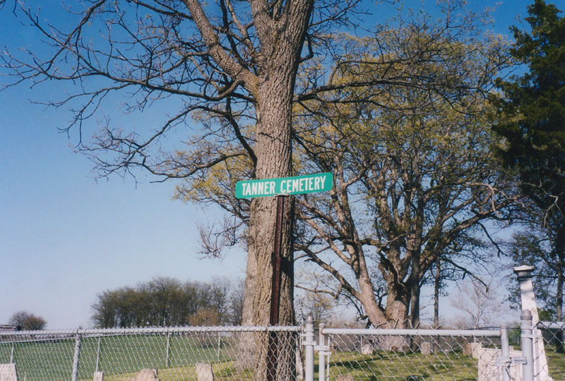
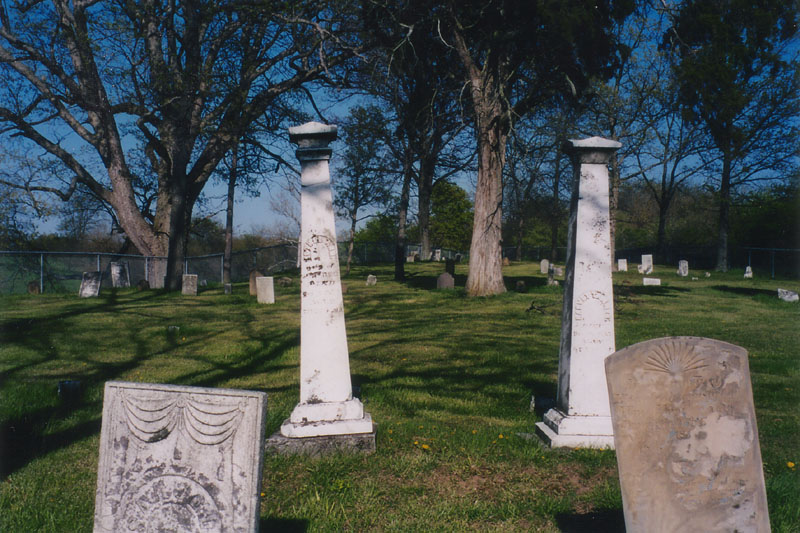
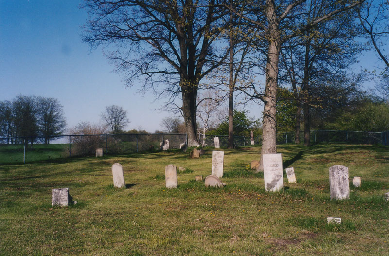
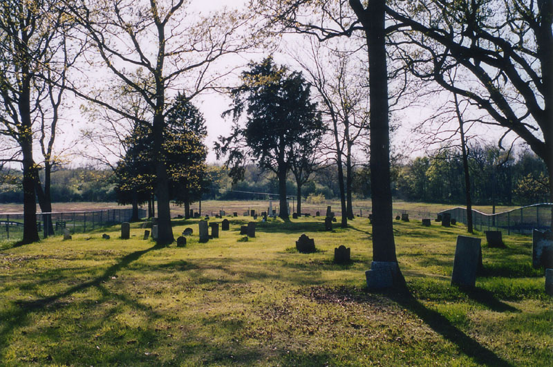

The Tanner Cemetery (also known as Alkire-Tanner) is a rectangular plot of land on top of a low hill in Darby Township--the northwest corner of Pickaway County. Katydid and I came upon it while driving around near Orient, and stopped because it was obviously an older cemetery with some interesting monuments. The dual pillars you see below belong to Harvey Tanner and his wife, Esther Ann (Neff) Tanner, both of whom died in the 1860s.

As with any old graveyard in the country, the markers here tell the story of the original settlers and their second generation in this part of Ohio. Hannah Douglas, who died in 1814, has the earliest death date, and might have been the first interment here, though if the empty, uneven patches of grass are any indication, some older stones are probably missing. Elizabeth Leazenby's 1879 grave is the most recent one still properly marked.

Tanner Cemetery is heavy on family plots. Despite the number of stones here, only twenty-two surnames are represented here: Alkire, Buel, Culler, Darst, Davis, Davison, Deyo, Douglas, Hornbeck, Leazenby, Morgan, Murphy, Neff, Reay, Riddle, Scovell, Smith, Tanner, Thornton, Timmons, Wickells, and Wood.

The Alkire-Tanner Cemetery sits on Route 62 north of Mt. Sterling, just past the county line, before the town of Derby. It's worth seeing, though its proximity to a big farmhouse and lack of convenient parking would make a night visit pretty tricky.
Special thanks to Katydid for the very nice photos.
Rootsweb: Alkire-Tanner Cemetery, Darby Twp., Pickaway Co., OH
Back